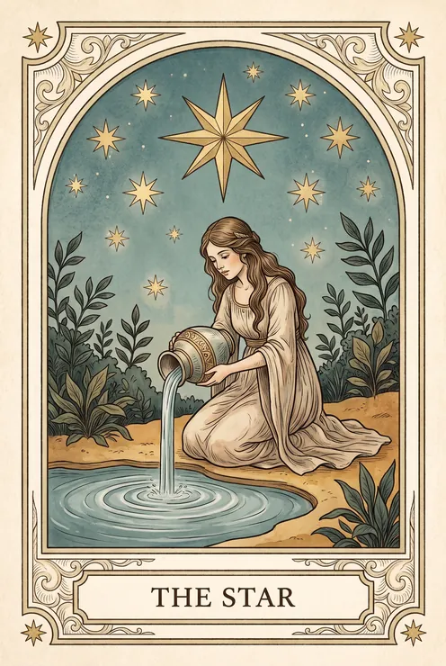

שלישי, 21.05.2025

היום מזמין אותך לעצור לרגע ולהקשיב למה שמתרחש בפנים. שיחה קצרה או סימן מקרי יכולים לכוון אותך נכון. סמכי על התחושות שלך, הן יודעות.
-
 אסטרולוגיה 50%
אסטרולוגיה 50%מיקום השמש והירח היום מול מפת הלידה שלך
-
 נומרולוגיה 15%
נומרולוגיה 15%המספר של התאריך היום מול מספר הדרך שלך
-
 טארוט 13%
טארוט 13%הקלף שנשלף לך היום, ומה שהוא מדגיש
-
 אי צ׳ינג 9%
אי צ׳ינג 9%ההקסגרמה שעלתה, ומה שהיא אומרת על התזמון
-
רונות 7%
הרונה שנמשכה, וכיוון הפעולה שהיא מציעה
-
 אינטואיציה 6%
אינטואיציה 6%משקל קטן ששמור לתחושה שלא נכנסת לנוסחה
אפשר לשנות את המשקולות במצב עריכה. השינוי חל על התחזית הבאה.
מאחורי הקלעים